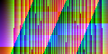

measurement inline transform stacking fragment gradient specificity selector counter replaced cascade container marker layout
object-fitobject-fitobject-fitmeasurement inline transform stacking fragment gradient specificity selector counter replaced cascade container marker layout baseline column measurement inline transform stacking fragment gradient specificity selector counter replaced
container marker layout baseline column measurement inline transform stacking fragment gradient specificity selector counter replaced cascade container marker layout baseline column measurement inline transform stacking fragment
specificity selector counter replaced cascade container marker layout baseline column measurement inline transform stacking fragment gradient specificity selector counter replaced cascade container marker layout baseline column
small capitals drawn from capitals at seven tenths of the size
specificity selector counter replaced cascade container marker layout baseline column measurement inline transform stacking fragment gradient specificity selector counter replaced
selector counter replaced cascade container marker layout baseline column measurement inline transform stacking fragment gradient specificity selector counter
| Name | Kind | Value |
|---|---|---|
| row 0.0 | kind 0 | 0 |
| row 0.1 | kind 1 | 37 |
| row 0.2 | kind 2 | 74 |
| row 0.3 | kind 3 | 111 |
| row 0.4 | kind 0 | 148 |
| row 0.5 | kind 1 | 185 |
container marker layout baseline column measurement inline transform stacking fragment gradient specificity selector counter
object-fitobject-fitobject-fitinline transform stacking fragment gradient specificity selector counter replaced cascade container marker layout baseline column measurement inline transform stacking fragment gradient specificity selector counter replaced cascade
marker layout baseline column measurement inline transform stacking fragment gradient specificity selector counter replaced cascade container marker layout baseline column measurement inline transform stacking fragment gradient
selector counter replaced cascade container marker layout baseline column measurement inline transform stacking fragment gradient specificity selector counter replaced cascade container marker layout baseline column measurement
small capitals drawn from capitals at seven tenths of the size
inline transform stacking fragment gradient specificity selector counter replaced cascade container marker layout baseline column measurement inline transform stacking fragment
transform stacking fragment gradient specificity selector counter replaced cascade container marker layout baseline column measurement inline transform stacking
| Name | Kind | Value |
|---|---|---|
| row 1.0 | kind 0 | 0 |
| row 1.1 | kind 1 | 37 |
| row 1.2 | kind 2 | 74 |
| row 1.3 | kind 3 | 111 |
| row 1.4 | kind 0 | 148 |
| row 1.5 | kind 1 | 185 |
specificity selector counter replaced cascade container marker layout baseline column measurement inline transform stacking
object-fitobject-fitobject-fittransform stacking fragment gradient specificity selector counter replaced cascade container marker layout baseline column measurement inline transform stacking fragment gradient specificity selector counter replaced cascade container
layout baseline column measurement inline transform stacking fragment gradient specificity selector counter replaced cascade container marker layout baseline column measurement inline transform stacking fragment gradient specificity
counter replaced cascade container marker layout baseline column measurement inline transform stacking fragment gradient specificity selector counter replaced cascade container marker layout baseline column measurement inline
small capitals drawn from capitals at seven tenths of the size
marker layout baseline column measurement inline transform stacking fragment gradient specificity selector counter replaced cascade container marker layout baseline column
layout baseline column measurement inline transform stacking fragment gradient specificity selector counter replaced cascade container marker layout baseline
| Name | Kind | Value |
|---|---|---|
| row 2.0 | kind 0 | 0 |
| row 2.1 | kind 1 | 37 |
| row 2.2 | kind 2 | 74 |
| row 2.3 | kind 3 | 111 |
| row 2.4 | kind 0 | 148 |
| row 2.5 | kind 1 | 185 |
inline transform stacking fragment gradient specificity selector counter replaced cascade container marker layout baseline
object-fitobject-fitobject-fitstacking fragment gradient specificity selector counter replaced cascade container marker layout baseline column measurement inline transform stacking fragment gradient specificity selector counter replaced cascade container marker
baseline column measurement inline transform stacking fragment gradient specificity selector counter replaced cascade container marker layout baseline column measurement inline transform stacking fragment gradient specificity selector
replaced cascade container marker layout baseline column measurement inline transform stacking fragment gradient specificity selector counter replaced cascade container marker layout baseline column measurement inline transform
small capitals drawn from capitals at seven tenths of the size
selector counter replaced cascade container marker layout baseline column measurement inline transform stacking fragment gradient specificity selector counter replaced cascade
counter replaced cascade container marker layout baseline column measurement inline transform stacking fragment gradient specificity selector counter replaced
| Name | Kind | Value |
|---|---|---|
| row 3.0 | kind 0 | 0 |
| row 3.1 | kind 1 | 37 |
| row 3.2 | kind 2 | 74 |
| row 3.3 | kind 3 | 111 |
| row 3.4 | kind 0 | 148 |
| row 3.5 | kind 1 | 185 |
marker layout baseline column measurement inline transform stacking fragment gradient specificity selector counter replaced
object-fitobject-fitobject-fitfragment gradient specificity selector counter replaced cascade container marker layout baseline column measurement inline transform stacking fragment gradient specificity selector counter replaced cascade container marker layout
column measurement inline transform stacking fragment gradient specificity selector counter replaced cascade container marker layout baseline column measurement inline transform stacking fragment gradient specificity selector counter
cascade container marker layout baseline column measurement inline transform stacking fragment gradient specificity selector counter replaced cascade container marker layout baseline column measurement inline transform stacking
small capitals drawn from capitals at seven tenths of the size
transform stacking fragment gradient specificity selector counter replaced cascade container marker layout baseline column measurement inline transform stacking fragment gradient
stacking fragment gradient specificity selector counter replaced cascade container marker layout baseline column measurement inline transform stacking fragment
| Name | Kind | Value |
|---|---|---|
| row 4.0 | kind 0 | 0 |
| row 4.1 | kind 1 | 37 |
| row 4.2 | kind 2 | 74 |
| row 4.3 | kind 3 | 111 |
| row 4.4 | kind 0 | 148 |
| row 4.5 | kind 1 | 185 |
selector counter replaced cascade container marker layout baseline column measurement inline transform stacking fragment
object-fitobject-fitobject-fitgradient specificity selector counter replaced cascade container marker layout baseline column measurement inline transform stacking fragment gradient specificity selector counter replaced cascade container marker layout baseline
measurement inline transform stacking fragment gradient specificity selector counter replaced cascade container marker layout baseline column measurement inline transform stacking fragment gradient specificity selector counter replaced
container marker layout baseline column measurement inline transform stacking fragment gradient specificity selector counter replaced cascade container marker layout baseline column measurement inline transform stacking fragment
small capitals drawn from capitals at seven tenths of the size
layout baseline column measurement inline transform stacking fragment gradient specificity selector counter replaced cascade container marker layout baseline column measurement
baseline column measurement inline transform stacking fragment gradient specificity selector counter replaced cascade container marker layout baseline column
| Name | Kind | Value |
|---|---|---|
| row 5.0 | kind 0 | 0 |
| row 5.1 | kind 1 | 37 |
| row 5.2 | kind 2 | 74 |
| row 5.3 | kind 3 | 111 |
| row 5.4 | kind 0 | 148 |
| row 5.5 | kind 1 | 185 |
transform stacking fragment gradient specificity selector counter replaced cascade container marker layout baseline column
object-fitobject-fitobject-fitspecificity selector counter replaced cascade container marker layout baseline column measurement inline transform stacking fragment gradient specificity selector counter replaced cascade container marker layout baseline column
inline transform stacking fragment gradient specificity selector counter replaced cascade container marker layout baseline column measurement inline transform stacking fragment gradient specificity selector counter replaced cascade
marker layout baseline column measurement inline transform stacking fragment gradient specificity selector counter replaced cascade container marker layout baseline column measurement inline transform stacking fragment gradient
small capitals drawn from capitals at seven tenths of the size
counter replaced cascade container marker layout baseline column measurement inline transform stacking fragment gradient specificity selector counter replaced cascade container
replaced cascade container marker layout baseline column measurement inline transform stacking fragment gradient specificity selector counter replaced cascade
| Name | Kind | Value |
|---|---|---|
| row 6.0 | kind 0 | 0 |
| row 6.1 | kind 1 | 37 |
| row 6.2 | kind 2 | 74 |
| row 6.3 | kind 3 | 111 |
| row 6.4 | kind 0 | 148 |
| row 6.5 | kind 1 | 185 |
layout baseline column measurement inline transform stacking fragment gradient specificity selector counter replaced cascade
object-fitobject-fitobject-fitselector counter replaced cascade container marker layout baseline column measurement inline transform stacking fragment gradient specificity selector counter replaced cascade container marker layout baseline column measurement
transform stacking fragment gradient specificity selector counter replaced cascade container marker layout baseline column measurement inline transform stacking fragment gradient specificity selector counter replaced cascade container
layout baseline column measurement inline transform stacking fragment gradient specificity selector counter replaced cascade container marker layout baseline column measurement inline transform stacking fragment gradient specificity
small capitals drawn from capitals at seven tenths of the size
stacking fragment gradient specificity selector counter replaced cascade container marker layout baseline column measurement inline transform stacking fragment gradient specificity
fragment gradient specificity selector counter replaced cascade container marker layout baseline column measurement inline transform stacking fragment gradient
| Name | Kind | Value |
|---|---|---|
| row 7.0 | kind 0 | 0 |
| row 7.1 | kind 1 | 37 |
| row 7.2 | kind 2 | 74 |
| row 7.3 | kind 3 | 111 |
| row 7.4 | kind 0 | 148 |
| row 7.5 | kind 1 | 185 |
counter replaced cascade container marker layout baseline column measurement inline transform stacking fragment gradient
object-fitobject-fitobject-fitcounter replaced cascade container marker layout baseline column measurement inline transform stacking fragment gradient specificity selector counter replaced cascade container marker layout baseline column measurement inline
stacking fragment gradient specificity selector counter replaced cascade container marker layout baseline column measurement inline transform stacking fragment gradient specificity selector counter replaced cascade container marker
baseline column measurement inline transform stacking fragment gradient specificity selector counter replaced cascade container marker layout baseline column measurement inline transform stacking fragment gradient specificity selector
small capitals drawn from capitals at seven tenths of the size
baseline column measurement inline transform stacking fragment gradient specificity selector counter replaced cascade container marker layout baseline column measurement inline
column measurement inline transform stacking fragment gradient specificity selector counter replaced cascade container marker layout baseline column measurement
| Name | Kind | Value |
|---|---|---|
| row 8.0 | kind 0 | 0 |
| row 8.1 | kind 1 | 37 |
| row 8.2 | kind 2 | 74 |
| row 8.3 | kind 3 | 111 |
| row 8.4 | kind 0 | 148 |
| row 8.5 | kind 1 | 185 |
stacking fragment gradient specificity selector counter replaced cascade container marker layout baseline column measurement
object-fitobject-fitobject-fitreplaced cascade container marker layout baseline column measurement inline transform stacking fragment gradient specificity selector counter replaced cascade container marker layout baseline column measurement inline transform
fragment gradient specificity selector counter replaced cascade container marker layout baseline column measurement inline transform stacking fragment gradient specificity selector counter replaced cascade container marker layout
column measurement inline transform stacking fragment gradient specificity selector counter replaced cascade container marker layout baseline column measurement inline transform stacking fragment gradient specificity selector counter
small capitals drawn from capitals at seven tenths of the size
replaced cascade container marker layout baseline column measurement inline transform stacking fragment gradient specificity selector counter replaced cascade container marker
cascade container marker layout baseline column measurement inline transform stacking fragment gradient specificity selector counter replaced cascade container
| Name | Kind | Value |
|---|---|---|
| row 9.0 | kind 0 | 0 |
| row 9.1 | kind 1 | 37 |
| row 9.2 | kind 2 | 74 |
| row 9.3 | kind 3 | 111 |
| row 9.4 | kind 0 | 148 |
| row 9.5 | kind 1 | 185 |
baseline column measurement inline transform stacking fragment gradient specificity selector counter replaced cascade container
object-fitobject-fitobject-fitcascade container marker layout baseline column measurement inline transform stacking fragment gradient specificity selector counter replaced cascade container marker layout baseline column measurement inline transform stacking
gradient specificity selector counter replaced cascade container marker layout baseline column measurement inline transform stacking fragment gradient specificity selector counter replaced cascade container marker layout baseline
measurement inline transform stacking fragment gradient specificity selector counter replaced cascade container marker layout baseline column measurement inline transform stacking fragment gradient specificity selector counter replaced
small capitals drawn from capitals at seven tenths of the size
fragment gradient specificity selector counter replaced cascade container marker layout baseline column measurement inline transform stacking fragment gradient specificity selector
gradient specificity selector counter replaced cascade container marker layout baseline column measurement inline transform stacking fragment gradient specificity
| Name | Kind | Value |
|---|---|---|
| row 10.0 | kind 0 | 0 |
| row 10.1 | kind 1 | 37 |
| row 10.2 | kind 2 | 74 |
| row 10.3 | kind 3 | 111 |
| row 10.4 | kind 0 | 148 |
| row 10.5 | kind 1 | 185 |
replaced cascade container marker layout baseline column measurement inline transform stacking fragment gradient specificity
object-fitobject-fitobject-fitcontainer marker layout baseline column measurement inline transform stacking fragment gradient specificity selector counter replaced cascade container marker layout baseline column measurement inline transform stacking fragment
specificity selector counter replaced cascade container marker layout baseline column measurement inline transform stacking fragment gradient specificity selector counter replaced cascade container marker layout baseline column
inline transform stacking fragment gradient specificity selector counter replaced cascade container marker layout baseline column measurement inline transform stacking fragment gradient specificity selector counter replaced cascade
small capitals drawn from capitals at seven tenths of the size
column measurement inline transform stacking fragment gradient specificity selector counter replaced cascade container marker layout baseline column measurement inline transform
measurement inline transform stacking fragment gradient specificity selector counter replaced cascade container marker layout baseline column measurement inline
| Name | Kind | Value |
|---|---|---|
| row 11.0 | kind 0 | 0 |
| row 11.1 | kind 1 | 37 |
| row 11.2 | kind 2 | 74 |
| row 11.3 | kind 3 | 111 |
| row 11.4 | kind 0 | 148 |
| row 11.5 | kind 1 | 185 |
fragment gradient specificity selector counter replaced cascade container marker layout baseline column measurement inline
object-fitobject-fitobject-fitmarker layout baseline column measurement inline transform stacking fragment gradient specificity selector counter replaced cascade container marker layout baseline column measurement inline transform stacking fragment gradient
selector counter replaced cascade container marker layout baseline column measurement inline transform stacking fragment gradient specificity selector counter replaced cascade container marker layout baseline column measurement
transform stacking fragment gradient specificity selector counter replaced cascade container marker layout baseline column measurement inline transform stacking fragment gradient specificity selector counter replaced cascade container
small capitals drawn from capitals at seven tenths of the size
cascade container marker layout baseline column measurement inline transform stacking fragment gradient specificity selector counter replaced cascade container marker layout
container marker layout baseline column measurement inline transform stacking fragment gradient specificity selector counter replaced cascade container marker
| Name | Kind | Value |
|---|---|---|
| row 12.0 | kind 0 | 0 |
| row 12.1 | kind 1 | 37 |
| row 12.2 | kind 2 | 74 |
| row 12.3 | kind 3 | 111 |
| row 12.4 | kind 0 | 148 |
| row 12.5 | kind 1 | 185 |
column measurement inline transform stacking fragment gradient specificity selector counter replaced cascade container marker
object-fitobject-fitobject-fitlayout baseline column measurement inline transform stacking fragment gradient specificity selector counter replaced cascade container marker layout baseline column measurement inline transform stacking fragment gradient specificity
counter replaced cascade container marker layout baseline column measurement inline transform stacking fragment gradient specificity selector counter replaced cascade container marker layout baseline column measurement inline
stacking fragment gradient specificity selector counter replaced cascade container marker layout baseline column measurement inline transform stacking fragment gradient specificity selector counter replaced cascade container marker
small capitals drawn from capitals at seven tenths of the size
gradient specificity selector counter replaced cascade container marker layout baseline column measurement inline transform stacking fragment gradient specificity selector counter
specificity selector counter replaced cascade container marker layout baseline column measurement inline transform stacking fragment gradient specificity selector
| Name | Kind | Value |
|---|---|---|
| row 13.0 | kind 0 | 0 |
| row 13.1 | kind 1 | 37 |
| row 13.2 | kind 2 | 74 |
| row 13.3 | kind 3 | 111 |
| row 13.4 | kind 0 | 148 |
| row 13.5 | kind 1 | 185 |
cascade container marker layout baseline column measurement inline transform stacking fragment gradient specificity selector
object-fitobject-fitobject-fitbaseline column measurement inline transform stacking fragment gradient specificity selector counter replaced cascade container marker layout baseline column measurement inline transform stacking fragment gradient specificity selector
replaced cascade container marker layout baseline column measurement inline transform stacking fragment gradient specificity selector counter replaced cascade container marker layout baseline column measurement inline transform
fragment gradient specificity selector counter replaced cascade container marker layout baseline column measurement inline transform stacking fragment gradient specificity selector counter replaced cascade container marker layout
small capitals drawn from capitals at seven tenths of the size
measurement inline transform stacking fragment gradient specificity selector counter replaced cascade container marker layout baseline column measurement inline transform stacking
inline transform stacking fragment gradient specificity selector counter replaced cascade container marker layout baseline column measurement inline transform
| Name | Kind | Value |
|---|---|---|
| row 14.0 | kind 0 | 0 |
| row 14.1 | kind 1 | 37 |
| row 14.2 | kind 2 | 74 |
| row 14.3 | kind 3 | 111 |
| row 14.4 | kind 0 | 148 |
| row 14.5 | kind 1 | 185 |
gradient specificity selector counter replaced cascade container marker layout baseline column measurement inline transform
object-fitobject-fitobject-fitcolumn measurement inline transform stacking fragment gradient specificity selector counter replaced cascade container marker layout baseline column measurement inline transform stacking fragment gradient specificity selector counter
cascade container marker layout baseline column measurement inline transform stacking fragment gradient specificity selector counter replaced cascade container marker layout baseline column measurement inline transform stacking
gradient specificity selector counter replaced cascade container marker layout baseline column measurement inline transform stacking fragment gradient specificity selector counter replaced cascade container marker layout baseline
small capitals drawn from capitals at seven tenths of the size
container marker layout baseline column measurement inline transform stacking fragment gradient specificity selector counter replaced cascade container marker layout baseline
marker layout baseline column measurement inline transform stacking fragment gradient specificity selector counter replaced cascade container marker layout
| Name | Kind | Value |
|---|---|---|
| row 15.0 | kind 0 | 0 |
| row 15.1 | kind 1 | 37 |
| row 15.2 | kind 2 | 74 |
| row 15.3 | kind 3 | 111 |
| row 15.4 | kind 0 | 148 |
| row 15.5 | kind 1 | 185 |
measurement inline transform stacking fragment gradient specificity selector counter replaced cascade container marker layout
object-fitobject-fitobject-fitmeasurement inline transform stacking fragment gradient specificity selector counter replaced cascade container marker layout baseline column measurement inline transform stacking fragment gradient specificity selector counter replaced
container marker layout baseline column measurement inline transform stacking fragment gradient specificity selector counter replaced cascade container marker layout baseline column measurement inline transform stacking fragment
specificity selector counter replaced cascade container marker layout baseline column measurement inline transform stacking fragment gradient specificity selector counter replaced cascade container marker layout baseline column
small capitals drawn from capitals at seven tenths of the size
specificity selector counter replaced cascade container marker layout baseline column measurement inline transform stacking fragment gradient specificity selector counter replaced
selector counter replaced cascade container marker layout baseline column measurement inline transform stacking fragment gradient specificity selector counter
| Name | Kind | Value |
|---|---|---|
| row 16.0 | kind 0 | 0 |
| row 16.1 | kind 1 | 37 |
| row 16.2 | kind 2 | 74 |
| row 16.3 | kind 3 | 111 |
| row 16.4 | kind 0 | 148 |
| row 16.5 | kind 1 | 185 |
container marker layout baseline column measurement inline transform stacking fragment gradient specificity selector counter
object-fitobject-fitobject-fitinline transform stacking fragment gradient specificity selector counter replaced cascade container marker layout baseline column measurement inline transform stacking fragment gradient specificity selector counter replaced cascade
marker layout baseline column measurement inline transform stacking fragment gradient specificity selector counter replaced cascade container marker layout baseline column measurement inline transform stacking fragment gradient
selector counter replaced cascade container marker layout baseline column measurement inline transform stacking fragment gradient specificity selector counter replaced cascade container marker layout baseline column measurement
small capitals drawn from capitals at seven tenths of the size
inline transform stacking fragment gradient specificity selector counter replaced cascade container marker layout baseline column measurement inline transform stacking fragment
transform stacking fragment gradient specificity selector counter replaced cascade container marker layout baseline column measurement inline transform stacking
| Name | Kind | Value |
|---|---|---|
| row 17.0 | kind 0 | 0 |
| row 17.1 | kind 1 | 37 |
| row 17.2 | kind 2 | 74 |
| row 17.3 | kind 3 | 111 |
| row 17.4 | kind 0 | 148 |
| row 17.5 | kind 1 | 185 |
specificity selector counter replaced cascade container marker layout baseline column measurement inline transform stacking
object-fitobject-fitobject-fittransform stacking fragment gradient specificity selector counter replaced cascade container marker layout baseline column measurement inline transform stacking fragment gradient specificity selector counter replaced cascade container
layout baseline column measurement inline transform stacking fragment gradient specificity selector counter replaced cascade container marker layout baseline column measurement inline transform stacking fragment gradient specificity
counter replaced cascade container marker layout baseline column measurement inline transform stacking fragment gradient specificity selector counter replaced cascade container marker layout baseline column measurement inline
small capitals drawn from capitals at seven tenths of the size
marker layout baseline column measurement inline transform stacking fragment gradient specificity selector counter replaced cascade container marker layout baseline column
layout baseline column measurement inline transform stacking fragment gradient specificity selector counter replaced cascade container marker layout baseline
| Name | Kind | Value |
|---|---|---|
| row 18.0 | kind 0 | 0 |
| row 18.1 | kind 1 | 37 |
| row 18.2 | kind 2 | 74 |
| row 18.3 | kind 3 | 111 |
| row 18.4 | kind 0 | 148 |
| row 18.5 | kind 1 | 185 |
inline transform stacking fragment gradient specificity selector counter replaced cascade container marker layout baseline
object-fitobject-fitobject-fitstacking fragment gradient specificity selector counter replaced cascade container marker layout baseline column measurement inline transform stacking fragment gradient specificity selector counter replaced cascade container marker
baseline column measurement inline transform stacking fragment gradient specificity selector counter replaced cascade container marker layout baseline column measurement inline transform stacking fragment gradient specificity selector
replaced cascade container marker layout baseline column measurement inline transform stacking fragment gradient specificity selector counter replaced cascade container marker layout baseline column measurement inline transform
small capitals drawn from capitals at seven tenths of the size
selector counter replaced cascade container marker layout baseline column measurement inline transform stacking fragment gradient specificity selector counter replaced cascade
counter replaced cascade container marker layout baseline column measurement inline transform stacking fragment gradient specificity selector counter replaced
| Name | Kind | Value |
|---|---|---|
| row 19.0 | kind 0 | 0 |
| row 19.1 | kind 1 | 37 |
| row 19.2 | kind 2 | 74 |
| row 19.3 | kind 3 | 111 |
| row 19.4 | kind 0 | 148 |
| row 19.5 | kind 1 | 185 |
marker layout baseline column measurement inline transform stacking fragment gradient specificity selector counter replaced
object-fitobject-fitobject-fitfragment gradient specificity selector counter replaced cascade container marker layout baseline column measurement inline transform stacking fragment gradient specificity selector counter replaced cascade container marker layout
column measurement inline transform stacking fragment gradient specificity selector counter replaced cascade container marker layout baseline column measurement inline transform stacking fragment gradient specificity selector counter
cascade container marker layout baseline column measurement inline transform stacking fragment gradient specificity selector counter replaced cascade container marker layout baseline column measurement inline transform stacking
small capitals drawn from capitals at seven tenths of the size
transform stacking fragment gradient specificity selector counter replaced cascade container marker layout baseline column measurement inline transform stacking fragment gradient
stacking fragment gradient specificity selector counter replaced cascade container marker layout baseline column measurement inline transform stacking fragment
| Name | Kind | Value |
|---|---|---|
| row 20.0 | kind 0 | 0 |
| row 20.1 | kind 1 | 37 |
| row 20.2 | kind 2 | 74 |
| row 20.3 | kind 3 | 111 |
| row 20.4 | kind 0 | 148 |
| row 20.5 | kind 1 | 185 |
selector counter replaced cascade container marker layout baseline column measurement inline transform stacking fragment
object-fitobject-fitobject-fitgradient specificity selector counter replaced cascade container marker layout baseline column measurement inline transform stacking fragment gradient specificity selector counter replaced cascade container marker layout baseline
measurement inline transform stacking fragment gradient specificity selector counter replaced cascade container marker layout baseline column measurement inline transform stacking fragment gradient specificity selector counter replaced
container marker layout baseline column measurement inline transform stacking fragment gradient specificity selector counter replaced cascade container marker layout baseline column measurement inline transform stacking fragment
small capitals drawn from capitals at seven tenths of the size
layout baseline column measurement inline transform stacking fragment gradient specificity selector counter replaced cascade container marker layout baseline column measurement
baseline column measurement inline transform stacking fragment gradient specificity selector counter replaced cascade container marker layout baseline column
| Name | Kind | Value |
|---|---|---|
| row 21.0 | kind 0 | 0 |
| row 21.1 | kind 1 | 37 |
| row 21.2 | kind 2 | 74 |
| row 21.3 | kind 3 | 111 |
| row 21.4 | kind 0 | 148 |
| row 21.5 | kind 1 | 185 |
transform stacking fragment gradient specificity selector counter replaced cascade container marker layout baseline column
object-fitobject-fitobject-fitspecificity selector counter replaced cascade container marker layout baseline column measurement inline transform stacking fragment gradient specificity selector counter replaced cascade container marker layout baseline column
inline transform stacking fragment gradient specificity selector counter replaced cascade container marker layout baseline column measurement inline transform stacking fragment gradient specificity selector counter replaced cascade
marker layout baseline column measurement inline transform stacking fragment gradient specificity selector counter replaced cascade container marker layout baseline column measurement inline transform stacking fragment gradient
small capitals drawn from capitals at seven tenths of the size
counter replaced cascade container marker layout baseline column measurement inline transform stacking fragment gradient specificity selector counter replaced cascade container
replaced cascade container marker layout baseline column measurement inline transform stacking fragment gradient specificity selector counter replaced cascade
| Name | Kind | Value |
|---|---|---|
| row 22.0 | kind 0 | 0 |
| row 22.1 | kind 1 | 37 |
| row 22.2 | kind 2 | 74 |
| row 22.3 | kind 3 | 111 |
| row 22.4 | kind 0 | 148 |
| row 22.5 | kind 1 | 185 |
layout baseline column measurement inline transform stacking fragment gradient specificity selector counter replaced cascade
object-fitobject-fitobject-fitselector counter replaced cascade container marker layout baseline column measurement inline transform stacking fragment gradient specificity selector counter replaced cascade container marker layout baseline column measurement
transform stacking fragment gradient specificity selector counter replaced cascade container marker layout baseline column measurement inline transform stacking fragment gradient specificity selector counter replaced cascade container
layout baseline column measurement inline transform stacking fragment gradient specificity selector counter replaced cascade container marker layout baseline column measurement inline transform stacking fragment gradient specificity
small capitals drawn from capitals at seven tenths of the size
stacking fragment gradient specificity selector counter replaced cascade container marker layout baseline column measurement inline transform stacking fragment gradient specificity
fragment gradient specificity selector counter replaced cascade container marker layout baseline column measurement inline transform stacking fragment gradient
| Name | Kind | Value |
|---|---|---|
| row 23.0 | kind 0 | 0 |
| row 23.1 | kind 1 | 37 |
| row 23.2 | kind 2 | 74 |
| row 23.3 | kind 3 | 111 |
| row 23.4 | kind 0 | 148 |
| row 23.5 | kind 1 | 185 |